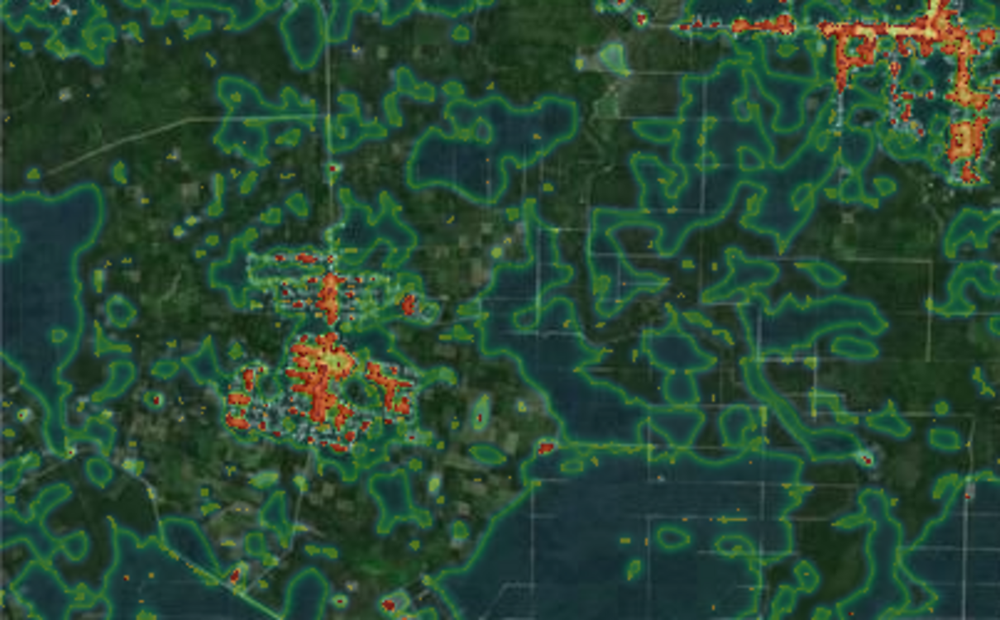

EEcoGuard
ecoguard://GPS-111.79E-2.50S/roadview-zones
GPS 기반 현장 로드뷰 시연
드래그로 둘러보기 · ↑ 전진 · 스크롤 이동
P01진입 숲길 · 정상 임상
GPS 111.79E / 2.50S
훼손 진행 0%
XAI CAM+Mask
360 Pano

2.5000°S 111.7900°E
탐지 지점 · P01 · 00m
XAI 미니맵
CAM + mask evidence
E
EcoGuard·FIELD
위성 탐지 → 현장 검증 로드뷰
시스템 초기화